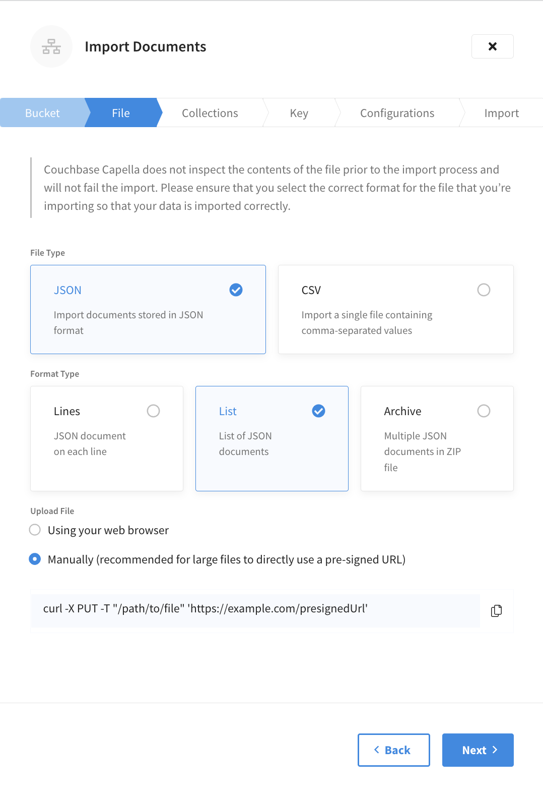
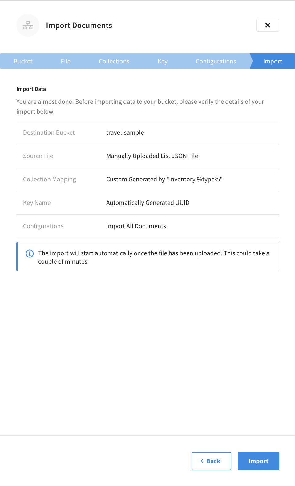
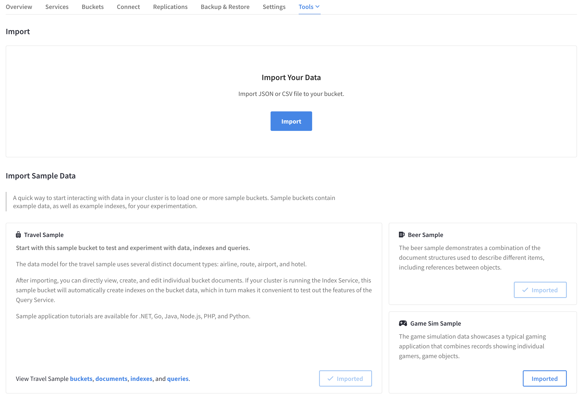
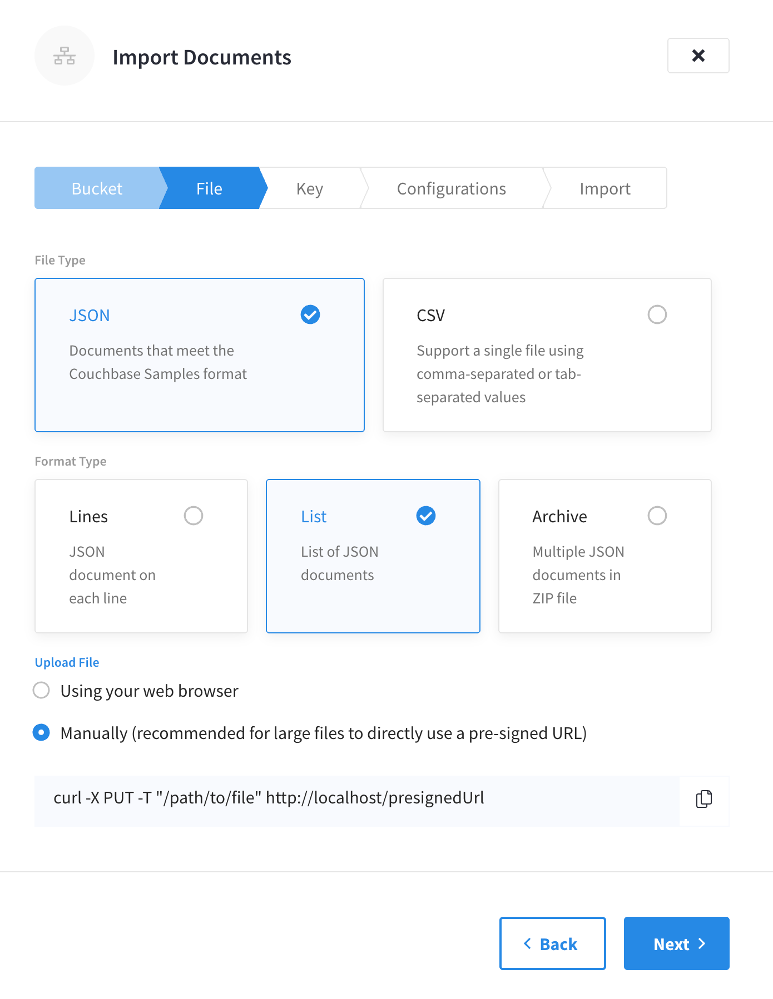
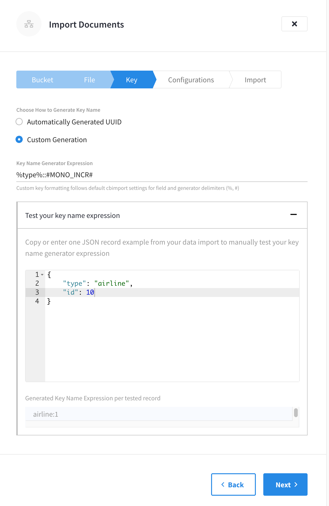
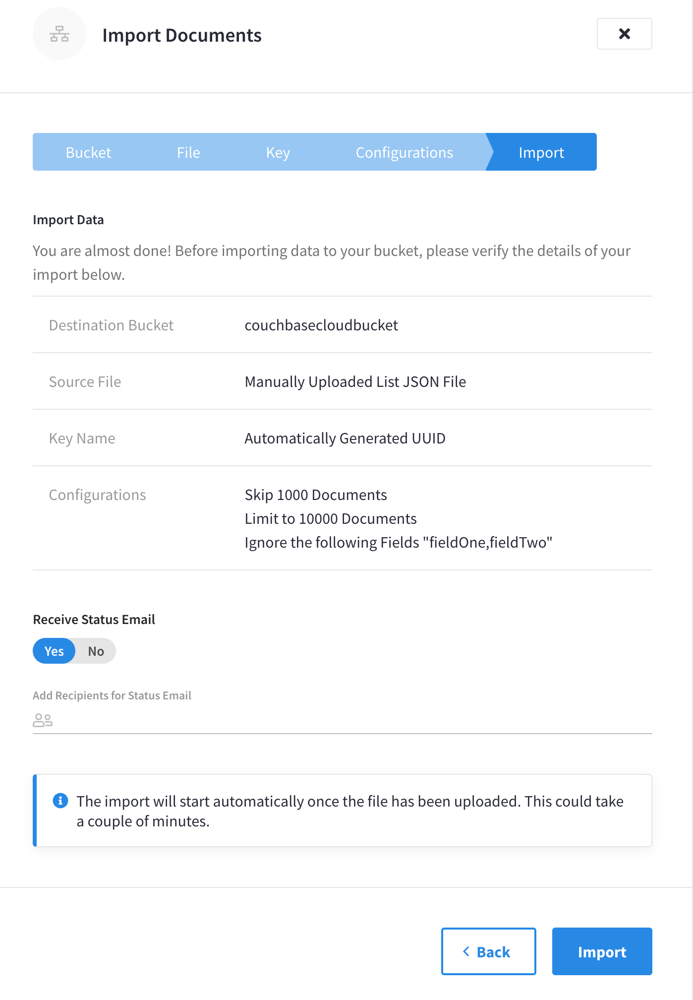

Import Data
Import JSON docs and CSV files, from a local machine or URL.
If you have a dataset in CSV form, or already converted to JSON (list or JSON docs), you can import it to Couchbase Capella from a local file on your laptop — or by pointing the import at a remote URL or a file on S3. This file archive can be zipped up before import.
Replication or backup-restore may be easier options if you are migrating to Capella from an on-premises database, but where that’s not possible then Import will give you flexibility over which documents are imported, and key-generation may be an advantage during a migration — keys for each document extracted from a CSV row or JSON list flat file can be auto-generated, or you may specify your own generating expression.
Accessing Import in the Capella UI
The Import tool, a list of previous imports, and sample bucket data are all accessible from an open cluster by clicking .
Import Overview
The Import screen is divided into two major sections: Import and Import Sample Data.
At the top of the screen, the Import section provides controls to initiate the import process and lists any previous imports. You can search this list of imports or filter it to only show imports initiated by your account. Imports show the destination bucket, the import status, who imported the data, when the data was imported, and the import file name and size.
The bottom half of the Import screen includes a selection of sample buckets that you can import into your cluster. These buckets include example data and indexes for experimentation and testing purposes. You can import sample data by clicking Import inside the sample description block. When a sample is imported, the Import button will change to Imported.
Import Data
| Capella does not inspect file contents before the import process |
-
To import data, click Import.
This action opens the Import Documents flyout menu.
-
Use the Bucket drop-down menu to choose a destination bucket where you want to import your file.
If you don’t have the appropriate bucket, you need to create one.

-
Click Next.
-
Choose the file type and format (if applicable).
You have the option of choosing the JSON or CSV format matching the file that you’re importing. If you’ve chosen the JSON format, you also need to specify the format type. JSON format types include:
-
Lines — JSON doc on each line.
-
List — List of JSON docs.
-
Archive — Multiple JSON documents in a ZIP file.
-
-
Upload file
You have the option to upload a file from your laptop (Using your web browser) or use a pre-signed URL to manually upload with a custom
cURLcommand (Manually). -
Click Next to apply collection mapping.
Collection Mapping
With the destination bucket and file type set, you need to add your collection mapping. The import feature provides the option to Select Single Collection to import that data to, or Custom Collection Mapping using the sort of custom generation also outlined in the Choose your Keys section.
-
Choose which collection documents are inserted into.
-
Select Single Collection (default)
This option allows you to import all documents in your import file into a single collection. Choosing the Select Single Collection option provides you with drop-down menus to select the scope and collection from the destination bucket.
-
Custom Collection Mapping
Make sure that any desired scope or bucket has already been created in the destination bucket when creating a custom collection mapping expression. While choosing a single collection to import your data to is the simplest method, you may need to insert different documents into different collections. For example, you can use custom collection mapping to import your data to a previously created collection based on a field in a document. In this case, if we wanted to import a new set of documents to the travel-sample’s
inventoryscope, within a collection based on each record’stypefield, we could use theinventory.%type%expression.-
Test collection mapping
Capella also offers the ability to test your collection mapping to verify that it can be parsed and that it meets your expectations. To test collection mapping, enter or copy a sample JSON record from your import into the Test your collection mapping text area. The Generated Collection Mapping Expression per tested record field will automatically update to show a preview of the collection mapping as it applies to the sample JSON record.

-
-
-
Click Next to choose how to generate keys.
Choose your Keys
After adding your collection mapping, you must add your key generator. Import offers many options for custom key generation. By default, it will automatically generate UUIDs for each JSON document in your file, but you have the option to generate custom keys.
-
Choose how to generate a key name.
-
Automatically Generated UUIDs
This is the default option.
-
Custom Generation
To generate custom keys, you can use a combination of the following:
-
Characters (any combination of ASCII characters).
-
The values from a given field in the JSON document. Wrap the field name in
%, e.g. —%insurance_number%. Nested field names should be separated by dots —key::%name.full.name%. -
Custom generators, wrapped in
#, e.g.#MONO_INCR#.
-
-
Copy or enter a JSON record from your data import into the Test your key name expression text area.
If you enter the custom generator expression before adding a sample JSON record, the test may fail. -
Enter a custom generator expression into the Key Name Generator Expression field.
While there is some validation to check that expressions can be parsed, Capella also offers the ability to test your key name expression to verify that it meets your expectations. The Generated Key Name Expression per tested record field will automatically update to show a preview of the collection mapping as it applies to the sample JSON record. For example, if we were to enter
#MONO_INCR#based on a document’stypefield, it will produceairline::1. AsMONO_INCRwas used, the number counter starts with1and increments for subsequent records.
The following two functions can be used along with the characters and field values used to generate custom key names:
-
#MONO_INCR#— integer, incremented by one for each document in the file archive, and starting at1. -
#UUID#— A generated Universally Unique IDentifier.
-
-
-
Click Next to apply various configurations.
Configurations
Now that you have added your key generator, you have a range of configuration options to choose from. These configuration options control which parts of an archive are imported.
-
Review the available configuration options for the file type that you are importing. Toggle any options that you want to apply to your import.
-
Skip Documents — By default, all documents are loaded. Setting this option allows some documents to be skipped before the importation stage. When enabled, a field is shown where you must enter the number of documents to skip before the import starts.
-
Limit Documents — Stop loading after a certain number of documents. This can be used for partially loading large datasets. When enabled, a field is shown where you must enter the number of documents to import.
-
Ignore Fields — Omit named fields from the uploaded documents. Use this in conjunction with the
%field_name%part of the custom generator to take out a document key from a field in a document — removing it from the body of the document, and placing it in the key name. When enabled, a field is shown where you must specify a comma-separated list of field names to exclude from the import.
-
Skip Documents — By default, all documents are loaded. Setting this option allows some documents to be skipped before importation stage. When enabled, a field is shown where you must enter the number of documents to skip before the import starts.
-
Limit Documents — Stop loading after a certain number of documents. This can be used for partially loading large datasets. When enabled, a field is shown where you must enter the number of documents to import.
-
Ignore Fields — Omit named fields from the uploaded documents. Use this in conjunction with the
%field_name%part of the custom generator to take out a document key from a field in a document — removing it from the body of the document, and placing it in the key name. When enabled, a field is shown where you must specify a comma-separated list of field names to exclude from the import. -
Infer Field Types — All values in a CSV are interpreted as strings by default. Setting this option will cause the Import tool to look at each value and decide if it’s a string, integer, or boolean value and put the inferred field type into the document.
-
Omit Empty Fields — Rows in the CSV file which do not contain data are stored as empty strings in the JSON doc. Setting this option will omit these fields from the uploaded document.
-
-
Click Next to review the details of your import.
Review
With the import’s configuration options set, you have the chance to review the details of your import.
-
Verify that the details of your import match your requirements.
Several configurations are available, to skip or alter the documents uploaded. If you need to make any changes, click the Back button to return to the previous stage of the import. Alternatively, at the top of the fly-out menu, click the tab of the import stage that you want to return to.
You cannot close the flyout and come back to the same step by reopening the flyout menu. All of the steps for the import process must be completed in one UI session.  -
After reviewing the details of your import, click Import.
The Import tool will start the process of importing your data. You can track the progress of this process using the tool’s import status information.
Import Status
The Import Documents flyout menu remains open to show the status of the import. Feel free to navigate away from this menu to other tasks — the status of imports is also shown on the screen’s import section. Once an import is successful, its status changes from In Progress to Completed.

Clicking on the name of the destination bucket for an import listed in the Import section opens the Import Documents flyout menu. This menu shows an import summary which includes the number of imported and failed documents, collection mapping, key name, and any ignored fields.
The listing for your import in the Import section also includes a link to down the import’s Records Log. This is found by clicking the More options () button on the same line as the import that you are working with and clicking Download Log File.
Import logs are retained for seven days. An option to delete import logs before this period elapses is available under the More options () button.
Further Reading
The Import tool loads data into a bucket on your cluster. If you wish to restore a bucket of data, refer to the Restore a Bucket page.
Import Data with Couchbase Capella in Own VPC
|
This information is for anyone still using Couchbase Server 6.6, hosted in their own cloud provider’s VPC. It does not apply to Couchbase 7.0, hosted in Couchbase’s VPC and fully managed for you. For further information contact Couchbase. The easiest way to get started with Capella, our fully managed DBaaS, is hosting in Couchbase’s Cloud. |
The Import Screen
Navigate to the Tools tab under Clusters, and you’ll find the Import button. 
Selecting this will open the Import flyout, and allow you to select a bucket, into which to import your file (if you don’t have the appropriate bucket, you’ll need to create one).

Here you can choose JSON or CSV format, and specify a pre-signed URL to manually upload with a custom cURL command, or upload a file from your laptop.

Choose your Keys
Import offers many options for custom key generation, but defaults to using automatically-generated UUIDs for each JSON document in your file. For custom keys, you can use a combination of the following:
-
Characters (any combination of ASCII characters).
-
The values from a given field in the JSON document. Wrap the field name in
%, e.g. —%insurance_number%. Nested field names should be separated by dots —key::%name.full.name%. -
Custom generators, wrapped in
#, e.g.#MONO_INCR#.
Entering a custom generator expression will result in a prompt to test it with a representative sample of your JSON data. 
#MONO_INCR# will simply toggle a number counter, starting at 1.
In the pictured example, above, %type%::#MONO_INCR# produces the document’s type field, two colon separators, and the number 1 (which would be incremented for subsequent records).
For a list of custom generators, see below.
Review
A range of options are available, to skip or alter the documents uploaded. Having selected some or none of them, you have a chance to review the details of your import.  Add e-mail addresses here to receive a report on the import.
| You cannot close the flyout and come back to the same step by reopening. All of the steps for the import process must be completed in one UI session. |
Progress Report
The screen will show upload status, but feel free to navigate away to other tasks — the status of imports can also be seen on the Tools tab of the Clusters page. You will see a link to download the import’s Records Log.
Logs can be accessed afterwards in the UI, and are retained for seven days.
Options
Options chosen during the import process are listed here for reference. You will also find explanations for each field in tooltips, as you follow the steps in the Import Tool’s interface.
Field & Document Options
The following options are available, which modify which parts of an archive are imported:
-
Skip Documents — By default, all documents are loaded; set this to allow some to be skipped before importation stage.
-
Limit Documents — Stop loading after a certain number of documents. This can be used for partially loading large datasets.
-
Ignore Fields — Omit named fields from the uploaded documents. Use this in conjunction with the
%field_name%part of the custom generator to take out a document key from a field in a document — removing it from the body of the document, and placing it in the key name. -
Ignore Field Types — All fields will be interpreted by default as strings. Set this flag to get the tool to infer whether the field values are strings, or are integers of boolean values.
-
Omit Empty Fields — Rows in the CSV file which do not contain data are stored as empty strings in the JSON doc. Setting this flag will omit these fields from the uploaded document.
Custom Generators
The following two functions can be used along with the characters and field values used to generate custom key names:
-
#MONO_INCR#— integer, incremented by one for each document in the file archive, and starting at1. -
#UUID#— A generated Universally Unique IDentifier.
Further Reading
The import tool loads data into a bucket on your Cloud cluster. If you wish to restore a whole Cluster of bucket data, refer to the Restore a Backup in Own VPC page.